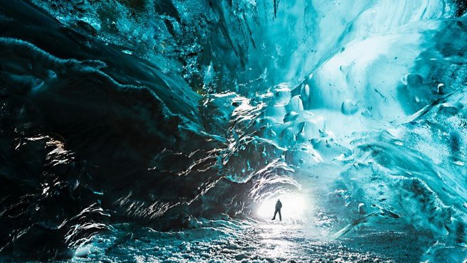
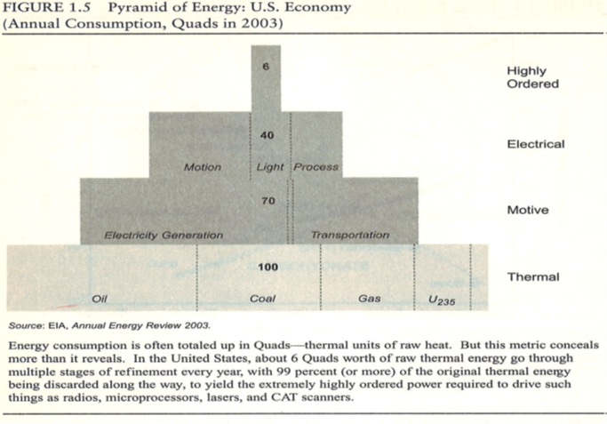
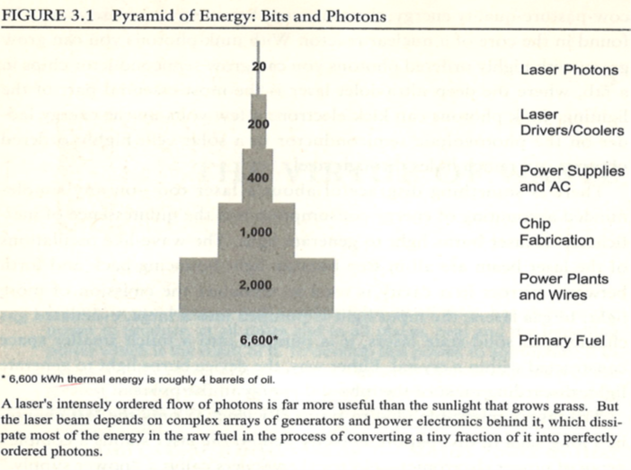
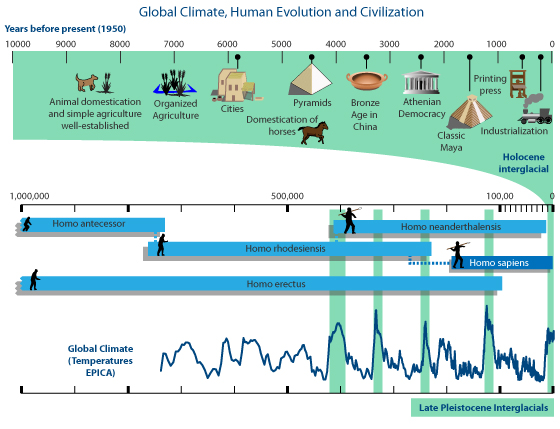
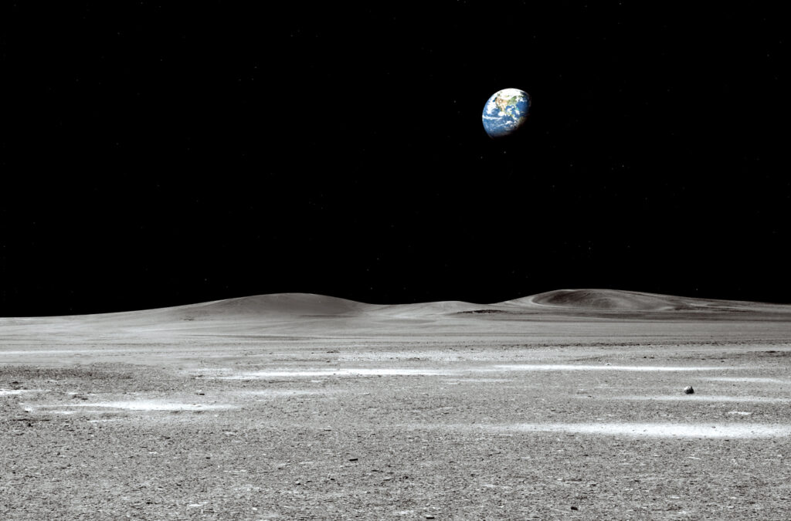

Out of Energy, Ice, Fire…and Darkness
“Warriors sang their “brave songs” Hóka hé! This life will not last forever…Take courage, the Earth is all that lasts…”
Oglala Native War Cry1
Globalization lives and emerges from a “wild” ecology. Blue, watery, planet Earth, glistening, resilient in her Solar-Galactic-Universal dark home, is carried by uneven momentums of an original “Big Bang” event. If Earth’s 4.5 billion year history were imagined in a 365 day year (525,600 minutes), current data suggests that our genus humans (Homo Sapiens) have been around for about 500,000 years or about an hour of that year. [250,000 / 4,500,000,000 = .000056 X 365 days = 0.020 X 24 hours = .48 hour]. Barely a blip on the geologic clock:
Stream of Life – Energy “Orders“
“Starting from nothing 4 billion years ago, life somehow contrived to capture high-grade energy from here and there and used it to assemble more life — so successfully, in fact, that life, a very complex form of order, now covers the planet. A second chain reaction of rising order got started with the dawn of agriculture, about eight thousand years ago. Human societies began selectively planting and breeding crops to capture solar energy systematically, and they used the expanding supplies of energy mainly to breed more people, who planted more crops. Humanity’s total energy consumption doubled about every five to ten centuries thereafter, in step with the (slowly) rising population.”
Peter Huber and Mark Mills, The Bottomless Well, 2005.2
We think of “energy” in the present, that is, as we “use” it. And this seems to be the case for wind and solar – the wind-turbine spins, the sun shines into the photovoltaic cell. However, as Huber and Mills point out, the “total energy order” is something altogether different. Any serious thought about wind and solar, as elegant and “clean” as they appear, must include the “total factor production” or what modern economists call “externalities,” that is, the total energy+resource input (including decommissioning and recycling) to gain the net output.
So, what do we have to do, to put together, to get to, say, a modern windmill, and how much “energy” and “resources” do we use to get there. It turns out, a lot! Mills reports that, as of 2019, “...a modern wind turbine requires 900 tons of steel, 2,500 tons of concrete and 45 tons of non-recyclable plastic. Building wind turbines to supply half the world’s electricity would require nearly 2 billion tons of coal to produce the concrete and steel, along with 2 billion barrels of oil to make the composite blades.“3 OK…that’s a lot, and a lot more than it appears in the “moment” as the blade spins atop its elegant white tower. You think? The white elegance hides wind tech’s total factor production costs and resources. Or, rather, it all boils down to an “energy pyramid.”
Again, Huber and Mills show us how the “highly ordered energy” we use is actually only a small fraction of the total energy network – in 2003, for example, the U.S. produced 100 raw “Quads” (oil, coal, natural gas, nuclear, hydro wind and solar) to arrive at our final usage of about 6 Quads. Who knew?

It turns out the energy story is all about “pyramids” and “supply chains” or “grids:”
Energy “pyramids”: Over the Earth’s 4-5 billion years the process of energy ordering gives rise to the gradual capture of exponentially greater energy concentrations (e.g., solar to carbohydrate to carbon, coal, oil, natural gas, uranium). Contrary to the possible entropy of the larger Universe, Earth’s processes appear to reflect increasing energy “orders.” We live in a kind of First Law of Thermodynamics oasis, that is, at least for the time being (life of the Sun), we are gathering, accumulating energy.
So, for example, high-energy modern surgical lasers are powered by an energy supply chain – see below. Approximately @6,600 Kilowatt Hours (kWh) of base thermal energy powers a surgical laser’s final flash product; about half of the total energy reaches the final “highly ordered” kWh’s of concentrated laser energy, while the remaining energy is lost in generation and transmission (energy waste). The same principle holds when we drive our kids to baseball practice – most of the energy to either build or move the vehicle has been inputted while all the final “motive” power (gasoline, coal/natgas/solar/hydro-powered electric) that gets the car (and us) to the game is only the last energy increment.
Or consider this pyramid to get to “laser photons”:

Earth’s energy supply-chain: The sun constitutes over 99% of the “mass” of our solar system – “here comes the sun…!” As the QUAD chart above illustrates, all life on Earth is powered by the sun’s energy. First, solar energy is absorbed by vegetation >>> Herbivores transform @10% of solar into carbohydrate energy, expel remainder; >>> Carnivores consume herbivores and absorb an exponentially larger energy fraction >>> Human evolution exploits higher food-chain nutrition (meat) to support larger brain-size and intelligence >>> vast amounts of energy gets naturally stored or “sequestered” in the deep fabric of the Earth itself (e.g., hydrocarbons such as petroleum and natural gas) >>> human evolution exploits these fuels (first wood but then coal-oil-natgas-uranium, as well as immediate hydro-solar/wind sources). Human evolutionary intelligence persistently innovates expansive energy resources – for example, in the recent 1990-2020 “second shale revolution” the U.S. electric grid gradually began to convert from primarily coal-fired production to natural gas fired, and in that period U.S. economic output (Gross Domestic Product or “GDP”) doubled, yet CO2 emissions actually drop to 1990’s levels.
21st Century Notes: 700-800 million people (out of a total @7.4 billion) do not yet have formal or direct access to electricity, less than 20% have iPhones and consequently expansive energy demand will continue to drive and transform the global economy and its geo-political alliances and inter-dependencies; the 21st century’s “Cloud” economy, and so the iPad or iPhone in your hands, which now uses 2X Japan’s total national demand, will persist to spontaneously expand and require substantially greater, even exponentially greater, energy resources.
“Big”Climate – Ice & “Optimums”
Earth’s elliptical solar orbit is eccentric and varies in @100,000-year cycles; Earth’s axis tilts obliquely in @41,000-year cycles; finally, induced by a still undefined, unknown force, “gravity,” Earth’s axis shifts, or “wobbles,” in @26,000-year cycles, called the “precession of the equinoxes.”
{kind=link}
These solar-system momentums – themselves immersed in galactic and universal momentums we do not fully understand – are highly variable and resist accurate predictability, and they are the singular forces which contribute dramatically to Earth’s climate and ecological history. Paleo-climatologists have developed marvelous and clever methodologies (chemical and geological analysis) to try to discern Earth’s deep eco-history secrets. The “paleo” view offers a rich and compelling alternative data-set to meteorological science’s @150 year data-set of more recent “weather.” A curious footnote arises as we realize that the highly developed “paleo-view” is either out of favor or even discredited by current “climate science” specialists, many of whom are in fact not scientists, at all. Consequently, quite to the contrary of “consensus,” the actual state of climate science appears to be lacking in the essential exchange of views and opposing data sets, it’s missing the civil argumentation and debate, the beer-hall performances even, or the wrestling matches of wit and ardor, that usually shape the background drama of scientific method. Indeed, this lack of beer-hall wildness may itself witness a kind of “wild” or spontaneous order, or rather, and this is the curious fold, an apparent wild suppression of wildness, itself, a holding down of the immensely explosive reach of variable and opposing data-sets, a kind of arrogation over data’s own wild spontaneity.
Climate temperatures vary wildly – paleo-climatological records indicate that temperatures were 8˚C (14˚F) warmer as recently as 120,000 years ago; the present climate optimum is actually cooler than previous optimums. The recent Laurentide Ice Sheet covered most of Canada in North America (c. 95,000-20,000 years ago) with depths up to 2 miles (3.2 km) or 10,000 feet as it gouged out the Great Lakes – our human ancestors emerged, survived, and thrived from the ice.
The top half of the chart below (“Global Climate, Human Evolution, and Civilization”) tracks how all of civilization’s written history, @10,000 years ago to present, has occurred during the recent climate optimum. On the chart’s bottom half, note the warmer “Late Pleistocene Interglacial” optimums and Homo sapiens emergence around 250,000 years ago.

Debate “rages’ about Civilization’s influence on climate. Contrary to popular belief, less than one-percent of climate scientists’ @12,000 formal research abstracts (1991-2011) thought “human activity is very likely causing most of the current global warming.” [Source: Cook 2013.] Curiously, both the warming enthusiasts and the paleo-watchers refer to the Milankovitch Cycles as key to our fragile, unstable climate. The “warming” folks characterize “weather as unpredictable…[but] climate is…highly predictable.” [Source: Mann and Kump, 2015]. The longer-toothed “paleo” folks, looking back over thousand- and million-year data sets, on the one hand are highly critical of the “warming” folks shorter 100-200 year data-sets and view climate as highly variable and only predictable in very broad, say, 1000-10,000-100,000 year strokes, if that, and on the other positive angle they note that, for example, CO2 is A/The vital nutrient for vegetation and hence all organisms up the food-chain, and in recent decades CO2 has increased causing an observable “greening” of the planet; and B/They observe that both CO2 levels as well as temperatures have, again, according to their very clever and deep geologic and chemical data-sets, been dramatically higher in previous climate periods. [Source: Robert Carter, 2010.]
OK, it’s a wild fight. But what our inquiry wants to ask is, “Why are these warming and paleo folks apparently not talking, not hashing this out…where’s the beer-hall arm-wrestling matches of wit and data and curiosity…why all this heavy-handed and stuffy sounding rhetorical panic…and, kicker questions, who’s accounting for the energy that will have to spontaneously come on-line to support roughly 2B “stealth economy” humans flooding into our cities needing electricity and wanting cell-phones, etc., or, for folks reading WG right now, over the Cloud, all of us who take “energy” entirely for granted, where are we gonna get the vast new energy resources to run our cute little “smart” i-devices and EV’s – where are we going to get the energy to run this stuff if we have to shut down our energy gathering orders “to survive,” the same energy orders that modern industrial-IT-urban Civilization has been building itself upon, like a herd of famished velociraptors, for 250 years or so?” This folks, this mania, this is wild globalization.*
*Sources
[*Sources: Michael M. Mann and Lee R. Kump, Dire Predictions – Understanding Climate Change, the Visual Guide to the Findings of the IPCC, 2nd Edition, New York: Penguin Random House, 2015; Robert M. Carter, The Counter Consensus, A Paleoclimatologist Speaks, London, Stacey International, 2010; Gregory Wrightstone, Inconvenient Facts – The Science that Al Gore Doesn’t Want You to Know, Silver Crown Productions LLC, 2017.; J. Cook and S.A. Green SA, et al, 2013, “Quantifying the consensus on anthropogenic global warming in the scientific literature.” Environ Res Lett 8(2):024024; and Legates DR, Soon W, Briggs WM et al (2015) Climate consensus and ‘misinformation’: a rejoinder to ‘Agnotology, scientific consensus, and the teaching and learning of climate change. Sci Edu 24:299–318, doi: 10.1007/s11191-013-9647-9.]
Perhaps we can all agree that 21st century souls, along with all of our land and sea co-creatures, breath in this wild climate. Homo sapien sapien emerged from the ice. “Civilization’s” run over the past 10,000 years has been the beneficiary of the present warm climate optimum. Warm optimums are likely the warm pauses, the interruptions, between the dominant 100,000 +/- year-long ice ages. Homo sapiens somehow squeaked out an existence, our existence, as they emerged in the ice’s breathing spaces. The deep data suggests it’s been colder, much, over most of our trek out of the forest and savannah.
“Big” Fire – Volcanism
Fire is the other Ecos story. Volcanoes and “super-“volcanoes randomly dot Earth’s landscape, hide under her oceans, and violently threaten the Bios. The 1980 Mt. St. Helens eruption, the largest in U.S. history, reminded us of this natural terror. Yet the St. Helens event was a minor episode – Pinatubo (1991) was 10X greater, Tambora (1815) 100X, and America’s own Yellowstone (@600,000 years ago) was 1000X larger on the Volcanic Explosivity Index (“VEI”):
{kind=link}
Lurking in America’s West lies majestic Yellowstone, a massive gash or “caldera” in the Earth’s surface – the largest volcano on the planet. Its geologic record extends at least 2-3 million years, the same window in time as human emergence. Its most recent eruptions occurred @640,000 and then @160,000 years ago – they disrupted and threatened all earth life.
These super-“fire” events spew massive amounts – measured in cubic miles or kilometers – of volcanic materials (especially sulfur gases) into the atmosphere and trigger what scientists call “volcanic winters” – catastrophic disruption of vegetation, and at the extreme, famines and species extinctions.
Such events punctuate all G1.0-G5.0 Wild Globalization – the Toba super-eruption @71-73 Kya7, the 1159 BCE Hekla Iceland eruptions, El Salvador’s 535 CE Llopango, Asia’s 946 CE Paektu, Indonesia’s 1257 CE Samalas, New Zealand’s 1315-17 CE Mount Tarawera, the Shepherd Island 1452 CE eruption, Peru’s Huaynaputina in 1600 CE, and as recent as Iceland’s 1783 Mt. Laki, or Indonesia’s 1815 Mt. Tambora or Krakatoa in 1883. Even the very recent 1991 eruption of Mt. Pinatubo in the Philippines cooled global temperatures for 2-3 years.
“Volcanic winter” aftermaths wreak havoc on global life, especially human culture now dependent upon modern agriculture – 100,000 Irish and 200,000 Europeans are thought to have perished from famines and typus between 1816-1819 following the 1815 Mount Tambora event, the largest eruption in recorded human history.8
Fire and ice are the natural extremes of our tiny blue watery planet home. The simple Wild Globalization fact is that our nearly 8 billion souls – dependent on global supply chains and modern food production – are at graver and “wilder” risk today than at any time in our evolutionary history.
Wild Darkness

Climate and fire are merely what is “seen” in the visible light spectrum. The Apollo missions captured some of the first images of the Earth seen from space. What do we see? Most will notice the “blue Earth” suspended in “space.” Equally, or more amazing, is the “background” – the vast, incommensurable reach of the universe in which our Earth lives. The darkness.
The brilliant American astronomer, Vera Rubin (1928-2016), was instrumental in convincing scientists “that at least 90% of the total spiral mass, and hence the total mass in the universe is dominated by nonluminous (i.e., “dark”) matter. It took 50 years for the discoveries of Zwicky (1933) and Smith (1936), that clusters of galaxies contained unseen matter, to make it to mainstream astronomy.”9
Wild, universal darkness is, it seems, a “dark fullness.” As Rubin reminds us, darkness is the “residual” real of life as we “see” it. Wild Globalization will think a lot about residuals.
Summary of Ecology
Globalization lives in Earth’s magical and wild ecology, Her Ecos. The Earth’s ecology is the home, the “marketplace,” the biggest trail, of earth-life. Globalization emerges from this wild Ecos.
Ecology is part of the “illumed and dark” matter of our global landscape – everything we think we know or can measure or estimate about globalization lives in a natural world – a natural world that is contiguous with the Big Bang, Creation.
We might believe we know or can control, even dominate, Ecology, but of course its physical [and metaphysical] mystery envelops us, holds us.
- 1 Gardner, Mark Lee, The Earth is All That Lasts – Crazy Horse, Sitting Bull, and the Last Stand of the Great Sioux Nation, Boston: Mariner Books, 2022., p. 16
- 2 Peter Huber & Mark Mills, The Bottomless Well, – The Twilight of Fuel, the Virtue of Waste, and Why We Will Never Run Out of Energy, New York: Basic Books, 2005, pp. 174-175.
- 3 Mark Mills, “If You Want ‘Renewable Energy’ Get Ready to Dig,” Wall Street Journal, August 5th, 2019.
- 4 Huber, Peter and Mills, Mark, p. 10.
- 5 IBID, p. 46.
- 6 https://skepticalscience.com/print.php?r=424
- 7 “Kya” denotes thousands of years ago.
- 8 https://en.wikipedia.org/wiki/Volcanic_winter
- 9 Vera C. Rubin, “One Hundred Years of Rotating Galaxies,” Publications of the Astronomical Society of the Pacific, 112:747-750, June 2000, p. 748; https://iopscience.iop.org/article/10.1086/316573.